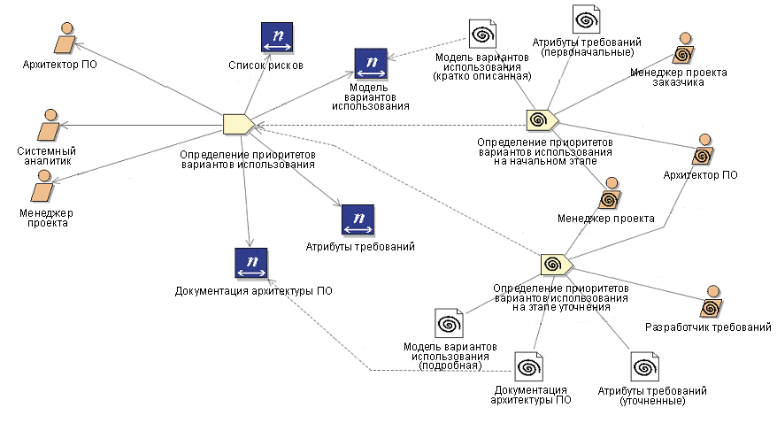

| Концепция: Дескриптор |
 |
|
Дескриптор представляет собой экземпляр конкретного элемента наполнения (задачи, роли или продукта работы) в операции. Дескрипторы выступают в роли промежуточных агентов этих элементов наполнения в структуре процесса. Дескрипторы допускают переопределение структурных взаимосвязей элементов наполнения и формирование нестандартных связей. Дескрипторы применяются для отделения процессов от наполнения метода. Дескриптор можно назвать ссылкой на конкретный элемент наполнения, располагающей собственным комплектом свойств и взаимосвязей. Сразу после создания набор взаимосвязей дескриптора совпадает с набором взаимосвязей элемента наполнения, на который ссылается этот дескриптор. Однако набор взаимосвязей дескриптора можно изменить, если это требуется для процесса, в котором применяется дескриптор. Механизм дескрипторов позволяет создавать новые взаимосвязи и свойства, привязанные к конкретным процессам. Дескрипторы не являются элементами наполнения и не располагают собственными полными описаниями. Они представляют собой ссылки на элементы наполнения, на основе которых они построены. Пример Пример использования наполнения метода с помощью дескриптора
|
© Copyright IBM Corp. 1987, 2005 Все права защищены |